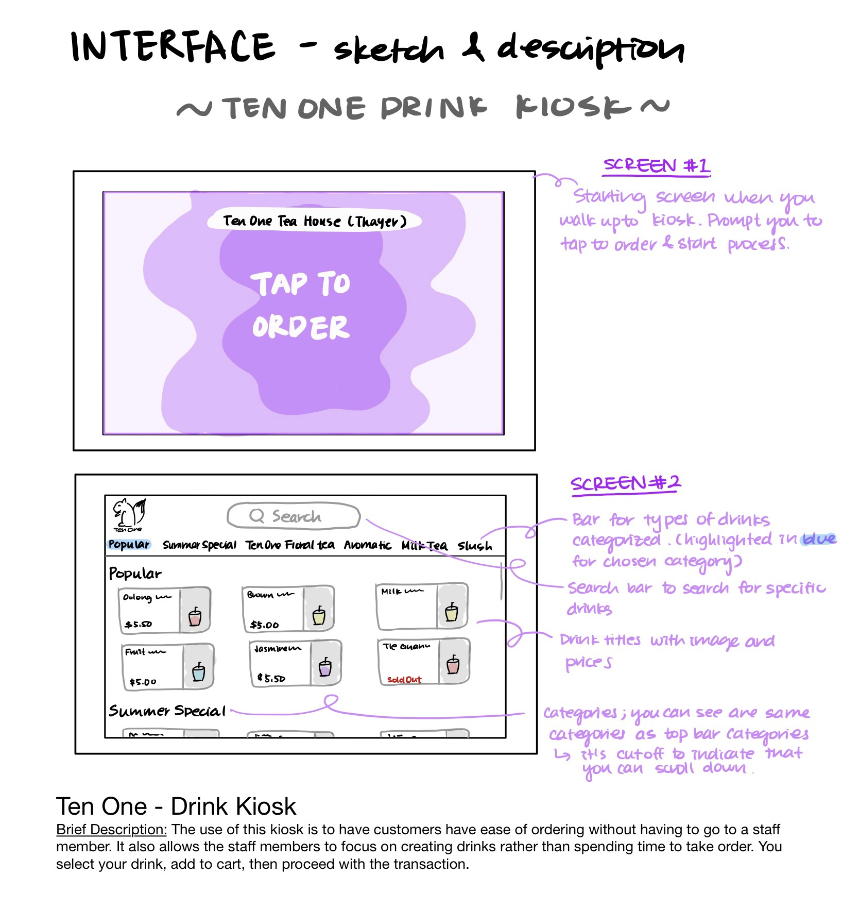
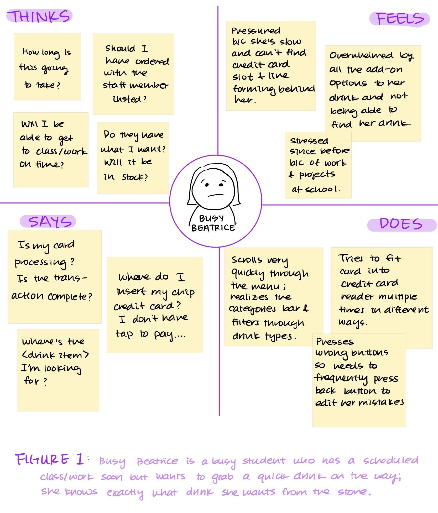
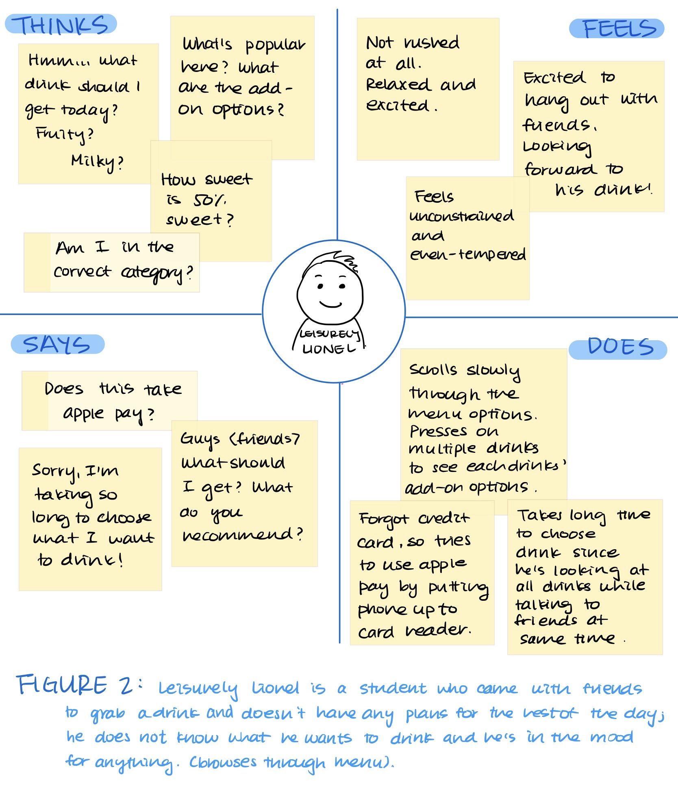
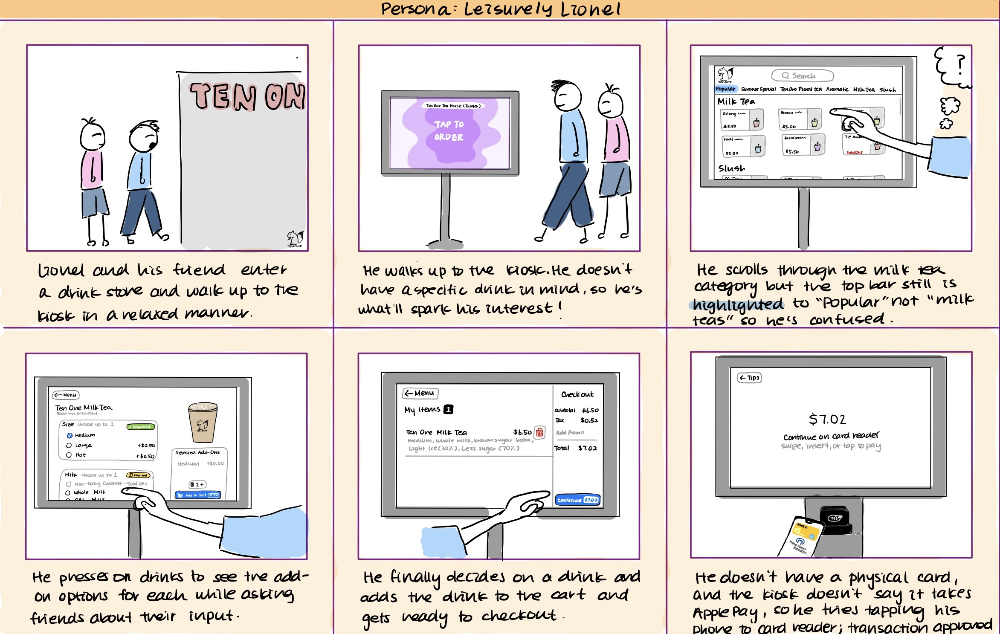

Personas & Storyboarding Assignment
For the personas and storyboarding assignment, I chose a drink ordering kiosk as my accessible interface. It had complex components that requires heavy interaction between the interface and the user. This project shows the process of
recording observations, interviewing user, creating user personas and a storyboard to allow me to step into the user's shoes.
PART 1 - Preparation
Interview Questions for Users
-
(before interacting) How do you expect your interaction with the interface to go? What are you trying to accomplish through this interaction? What is important to you (convenience? accessibility? speed?)?
-
What goes through your mind as you navigate through the kiosk interface? Do you need to think about what to tap/press or are your actions intuitive?
-
At any point were you confused about how to proceed after an action? (ex. after adding the drink to the cart, did you know how to go check out?)
-
Would you think that ordering from the kiosk was in any way more convenient than ordering directly from a staff? Would you go order from the kiosk again next time or from the counter with a staff member?
Sketch of Interface

PART 2
Key Observations
- All users immediately began their odering process on the kiosk since the start screen directly said "TAP TO START"
- Payment and transaction process was slower than other processes. Multiple attempts to fit card into the card reader was made. Users who used ApplePay also made more than one attempt for a successful payment.
- Users would hover the screen using their finger/hand to navigate through the kiosk. For example would click into drinks and if they wanted to go back to the menu, they would move their finger to the upper left corner part of the screen to press back button.
- Users all ended their sessions once the kiosk screen displayed their order number and asked the user to return the screen to home.
Interview Responses
-
(before interacting) How do you expect your interaction with the interface to go? What are you trying to accomplish through this interaction? What is important to you (convenience? accessibility? speed?)?
-
Users expected the interaction to go smoothly without many hiccups. They hoped to accomplish ordering their drinks with ease and fairly quickly without needing to call over the store staff for help. They hoped that everything would be quite intuitive. Convenience and speed were the two things that users valued the most.
-
What goes through your mind as you navigate through the kiosk interface? Do you need to think about what to tap/press or are your actions intuitive?
- Users didn’t really comment much about what when through their minds. They felt that if the kiosk interface was designed well, nothing should go through their mind very much. If they started questioning interface decisions, then that means that the interface was not intuitive and not well designed. So not having much in their mind indicated a fairly good interface.
-
At any point were you confused about how to proceed after an action? (ex. after adding the drink to the cart, did you know how to go check out?)
- Two of my interviewed users were confused about the transaction process. The kiosk didn’t indicate that it accepted ApplePay, so they needed to just hope that it took ApplePay and test it without being guaranteed that it will process. Another problem was that when a user scrolled to a new category or type of drink, the highlighted part of the category name on the top bar with the different categories didn’t change with the scrolling. For example, if they scrolled to he milk tea section, the highlighted part on the top bar was still highlighted as “Popular” instead of “milk tea.”
-
Would you think that ordering from the kiosk was in any way more convenient than ordering directly from a staff? Would you go order from the kiosk again next time or from the counter with a staff member?
- There were two distinct responses. The first persona did not have an exact drink in mind to buy, so they said that they would go back to the kiosk since it gave them less pressure to make a quick decision since there isn’t a staff waiting and staring at them to choose a drink, and they were able to scroll through all the drinks and visually see all available options.
- The other respondents said that they felt that they would not use the kiosk because they usually get the same order every time, so it would be faster to tell staff what they want. They simply wanted to be in and out of the place as fast as possible (did not want to scroll to find their drinks). It would also make payment quicker since the card reader wasn’t very intuitive.
PART 3 - personas


PART 4 - storyboard
